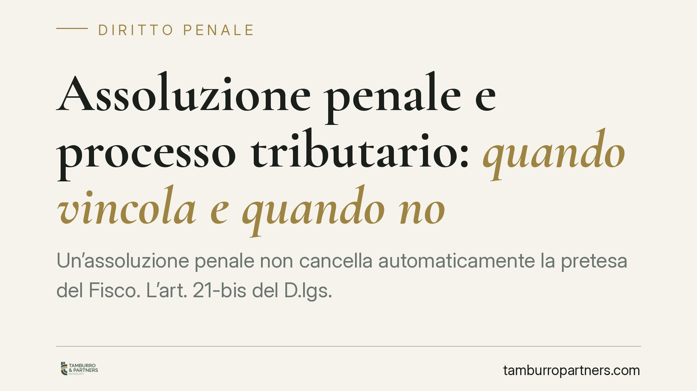

Assoluzione penale e processo tributario: quando vincola e quando no
Un'assoluzione penale non cancella automaticamente la pretesa del Fisco. L'art. 21-bis del D.lgs. 74/2000, introdotto dalla riforma del 2024, stabilisce quando la sentenza penale di assoluzione nel merito fa stato nel giudizio tributario e quando, invece, il giudice fiscale conserva autonomia di valutazione, specie in presenza di presunzioni legali. Capire questa linea di confine è decisivo per impostare la difesa.

Il quadro normativo
Per anni il rapporto tra processo penale e processo tributario è stato governato dal principio del cosiddetto "doppio binario": i due giudizi procedevano in modo autonomo, e l'esito penale non vincolava il giudice tributario. Ciò poteva produrre esiti divergenti sullo stesso fatto: assoluzione in sede penale, conferma della pretesa fiscale in sede tributaria.
La riforma del sistema sanzionatorio tributario ha inciso su questo assetto. L'art. 21-bis del D.lgs. 74/2000, introdotto dall'art. 1 del D.lgs. 87/2024, prevede che la sentenza penale irrevocabile di assoluzione pronunciata con la formula "perché il fatto non sussiste" o "perché l'imputato non lo ha commesso", a seguito di dibattimento, abbia efficacia di giudicato nel processo tributario. Il vincolo opera quando i fatti materiali oggetto del giudizio sono i medesimi per cui è stata esercitata l'azione penale.
Il nodo dello standard probatorio
Il punto delicato è che penale e tributario "misurano" la prova con unità diverse.
Nel processo penale vale la regola della condanna "oltre ogni ragionevole dubbio" (art. 533 c.p.p.). Un'assoluzione, quindi, può derivare anche solo dall'insufficienza o contraddittorietà della prova (art. 530, comma 2, c.p.p.): il fatto non è provato al livello richiesto dal penale, ma ciò non equivale sempre a dire che non sia accaduto.
Nel processo tributario, invece, il convincimento del giudice può fondarsi anche su presunzioni legali, cioè regole che consentono di dedurre un fatto ignoto da un fatto noto, salvo prova contraria a carico del contribuente. Lo standard è più permeabile rispetto a quello penale.
Da qui la distinzione operativa: l'efficacia di giudicato dell'assoluzione riguarda le formule "il fatto non sussiste" e "l'imputato non lo ha commesso", che negano il fatto nella sua materialità. L'assoluzione per insufficienza di prove non produce invece lo stesso effetto vincolante automatico, perché non afferma che il fatto non è avvenuto. In questi casi il giudice tributario conserva margini di autonoma valutazione, potendo valorizzare le presunzioni legali previste dalla normativa fiscale. La giurisprudenza di legittimità, anche a Sezioni Unite, si è pronunciata sui rapporti tra i due giudizi e sulla portata del nuovo meccanismo: conviene verificarne gli esatti estremi caso per caso, perché l'orientamento è in consolidamento.
Che cosa cambia per il contribuente
La riforma produce tre effetti concreti su chi affronta in parallelo un procedimento penale e una contestazione fiscale.
1. Strategia difensiva unitaria. La formula assolutoria non è un dettaglio: ottenere un'assoluzione "perché il fatto non sussiste" ha un valore nel tributario ben diverso da un proscioglimento per prova insufficiente. La difesa penale va impostata, sin dall'inizio, tenendo d'occhio anche le ricadute fiscali.
2. Tempistiche e coordinamento. Il vincolo richiede una sentenza penale irrevocabile. Occorre quindi valutare se e come coordinare i tempi del contenzioso tributario con quelli del giudizio penale, anche in sede di istanze di sospensione o di produzione documentale.
3. Il peso delle presunzioni. Anche dopo un'assoluzione, se restano in campo presunzioni legali (per esempio su movimentazioni bancarie o ricostruzioni reddituali), il contribuente può dover comunque fornire prova contraria nel giudizio fiscale. L'assoluzione non chiude sempre la partita con l'Agenzia delle Entrate.
Cosa fare in concreto
- Mappate i fatti comuni. Individuate con precisione quali fatti materiali sono oggetto sia del penale sia della contestazione fiscale: il vincolo opera solo sui fatti coincidenti.
- Pretendete attenzione alla formula assolutoria. In sede penale, puntate ove possibile alle formule di merito ("il fatto non sussiste", "non lo ha commesso"), più efficaci nel tributario.
- Monitorate l'irrevocabilità. Il giudicato penale vale solo se definitivo: tenete traccia dello stato di impugnazione e dei termini.
- Preparate la prova contraria. Anche in caso di assoluzione, organizzate per tempo la documentazione utile a superare eventuali presunzioni legali nel giudizio tributario.
- Coordinate i difensori. Fate dialogare la difesa penale e quella tributaria: una strategia frammentata rischia di vanificare i benefici dell'art. 21-bis.
Consigliamo di far esaminare la propria posizione da un professionista non appena si profili un doppio fronte, penale e fiscale: le scelte compiute nelle prime fasi condizionano il risultato in entrambi i procedimenti.
---
Contributo informativo a cura di Tamburro & Partners - Avv. Giuseppe Tamburro. Non costituisce parere legale.
Ogni condominio ha una storia a sé.
Se gestisci un'amministrazione e vuoi un confronto su una specifica questione condominiale, scrivi allo studio. Ti rispondiamo entro un giorno lavorativo.